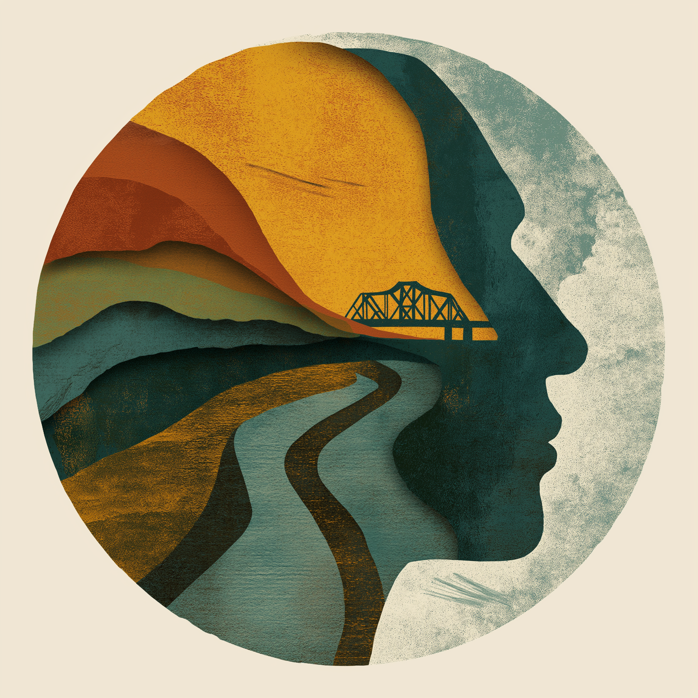

Humanistic-Existential Psychotherapy in Rome, Georgia
Making sense of yourself in a complicated world.
If things were simple, word would’ve gotten out. Life sometimes doesn’t go according to our plan. Relationships change. Responsibilities accumulate. Loss reshapes us. Parts of ourselves that once seemed compatible begin to pull in different directions.

Find your way
Where should I start?
Where different parts of life come together.
Confluence has multiple meanings in the context of our practice. Our offices are in the heart of Downtown Rome, where the confluence of Etowah and Oostanaula Rivers form the Coosa River. Each arrives with its own course, current, history, and character. At their meeting point, something new emerges while still carrying traces of what came before.
For all sorts of reasons, people often find themselves navigating a similar experience at various points of life. Relationships, responsibilities, losses, aspirations, transitions, values, and competing versions of who they are don't always fit together easily. Therapy invites an opportunity to examine those tensions, to understand how the different parts of life relate to one another, and to consider what kind of path they may be forming together.
Over time, that process often brings a greater sense of coherence and integration. Clients develop a clearer understanding of themselves, a stronger trust in their own judgement and a deeper connection to what matters most to them.
Located in the heart of Downtown Rome, our office sits near the meeting of the Etowah and Oostanaula Rivers, where they join to form the Coosa River. The idea of confluence—a coming together of separate paths, experiences, and notions of self—continues to shape the way we think about growth, change, and psychotherapy.
Our Approach
A practice built around depth, agency, and relationship.
Many people begin therapy because something in their life has become difficult to ignore. It might be something that’s nuanced, a hint that something is off (“what’s up with me today?”). In other instances, it might be something more like a clobbering (“Well I guess that’s the end of that chapter of my life!”). Often, the something is actually some things—feelings and thoughts and behaviors that come in waves, making life and relationships feel harder, stranger, and more complicated. They are often subtly correlated with larger questions: Who am I becoming? What do I really value? Why do I keep doing ___ in certain relationships? What kind of life am I responsible for creating?
Humanistic-existential psychotherapy approaches these questions directly. Rather than focusing only on symptom reduction, therapy becomes an opportunity to better understand yourself, your relationships, your patterns, and the meaning you wish to create in your life.
This approach begins from the belief that people possess inherent strengths, resilience, creativity, and human potential. Therapy does not impose answers from the outside. It helps you reconnect with yourself, your own agency, clarify your values, integrate different parts of life, appreciate your reflection again, and live with greater authenticity and intention.
Begin with a conversation
Therapy starts with a real encounter.
Schedule a brief consultation to ask questions, speak to what brings you here, and get a sense of whether this kind of engaged, Humanistic-Existential therapy feels right for the work you want to do.
Get in touch